O fertilizante foliar Classe A que aumenta no mínimo entre 10% e 20% na produtividade da lavoura nos 2 primeiros anos e de 20% a 30% a partir dos 2 anos na produção de culturas com folhas.
Criado para ajudar na sustentabilidade e otimização de culturas do agronegócio, o Coin Max é um fertilizante foliar organomineral de alta performance.
O segredo está no bio estimulante genético em sua fórmula ultra concentrada de extratos vegetais orgânicos.
Por que o Coin Max atua no sequestro carbônico?
Redução de gases de efeito estufa;
Ambiente favorável ao desenvolvimento de microrganismos;
Multinutrientes;
Redução de impacto ambiental;
Não se perdem por lixiviação, preservando a vida no solo e otimizando a produção;
Aumenta a produção de raízes na biota da terra, absorvendo grandes quantidades de nutrientes necessárias para um bom desempenho nutricional.
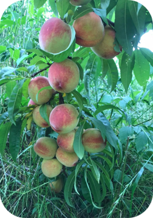
Por que o Coin Max atua no sequestro carbônico?
Por ter vários fatores relacionados ao desenvolvimento da planta, onde com isso produz grandes quantidades de folhas a mais, fazendo o aumento da absorção pelo estômato da folha.
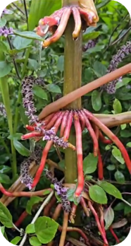
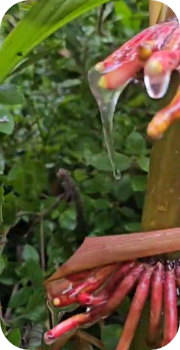
Alta Performance comprovada há quase 6 anos
Desenvolvido com o propósito de aumentar a produtividade da safra e diminuir as pragas e pestes em culturas foliares, o Coin Max vem sendo testado e aprimorado a anos por especialistas, produtores, agrônomos, engenheiros e técnicos agrícolas em diversas regiões do Brasil e até no exterior em países como a Holanda.
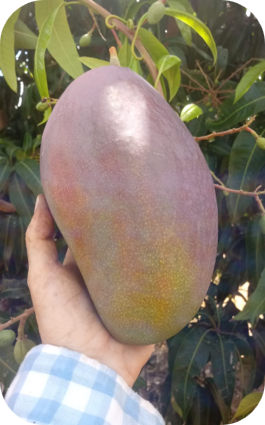
Alta Performance comprovada há quase 6 anos
A fórmula do bio estimulante genético ultra concentrada de extratos vegetais orgânicos é diluída no fertilizante foliar Coin Max, e como tudo que oferece alta performance e sustentabilidade, a reação acontece no processo natural e orgânico de fotossíntese, estimulando a cultura a buscar mais nutrientes no solo e buscando mais nutrientes, a cultura se alimenta mais, e naturalmente cresce mais, deixando o solo ainda melhor e mais preparado com mais bolo orgânico para as próximas safras.
Ainda no tema de alta performance e sustentabilidade, o Coin Max é composto por extratos de algas e aminoácidos que inibem o feromônio da planta, o que em alguns casos o fez reagir como um protetor contra pestes.
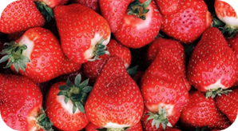
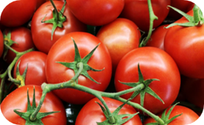
Alta Performance comprovada há quase 6 anos
No caso do milho por exemplo, a maioria dos testes mostraram que a cigarrinha (peste muito conhecida), não devora mais a cultura, devido aos estímulos causados pela aplicação do fertilizante foliar com o bioestimulante genético.
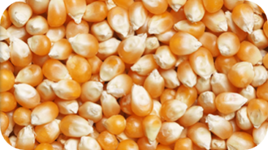
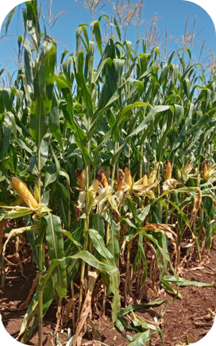
Tecnologia aliada à nutrição
Além do alto recurso biológico da fórmula concentrada do bioestimulante genético, o restante da composição do fertilizante foliar é de alto teor nutritivo para a cultura foliar.
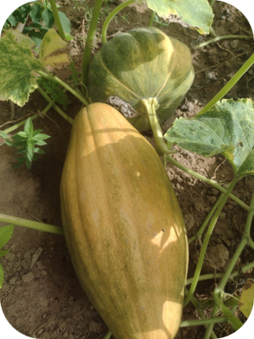
Quais os requisitos para que a aplicação
do Coin Max seja eficaz?
O Coin Max deve ser aplicado 100% separadamente, sem a mistura de fungicidas, herbicidas ou qualquer outro tipo de calda
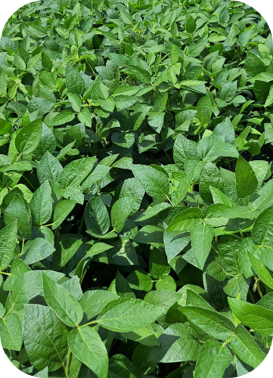
Quais os requisitos para que a aplicação
do Coin Max seja eficaz?
A aplicação precisa ser feita em dia de sol entre 5h e 10h da manhã ou das 15h em diante para evitar a evaporação do Coin Max da folha,
Considerar que a temperatura esteja abaixo de 30ºC.
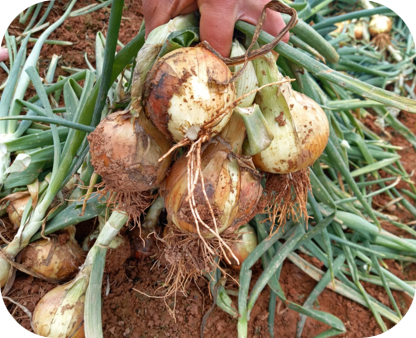
Quais os requisitos para que a aplicação
do Coin Max seja eficaz?
Não aplicar em dias que ocorram picos elevados de sol;
Não aplicar em dias de chuva, com fortes ventos ou orvalho de chuva,
As dosagens para cada cultura devem ser seguidas à risca para que o fertilizante foliar com o bio estimulante genético obtenha êxito.
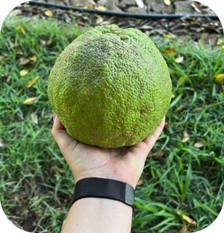
Em quais culturas o Coin Max já está sendo aplicado?
O fertilizante foliar Coin Max está sendo aplicado em diversas culturas: soja, milho, feijão, tomate, manga, fumo, morango, etc. Já foram realizados testes com alta performance na safra em quase 20 culturas diferentes.
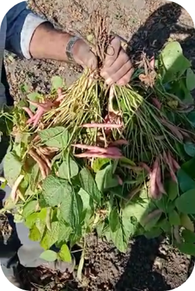
O Coin Max possui registro no MAPA (Ministério da Agricultura, Pecuária e Abastecimento)?
Sim. O fertilizante foliar Coin Max é um produto registrado e sem impedimentos para ser comercializado no mercado.
Registro no MAPA: RS-003872-5.000067
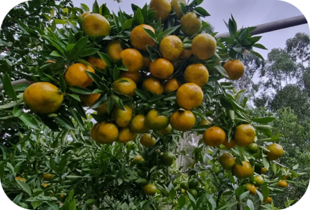
Como e quando deve ser feita a aplicação do Coin Max?
Em todo tipo de cultura foliar o fertilizante foliar Coin Max pode ser aplicado, e a quantidade é de 5 a 6 litros por hectare.
A época ideal da aplicação é entre a V4 e a V6, aplicação única.
No caso de pastagem é no perfilhamento após pastoreio, a cada 3 meses.No caso do trigo e do arroz é no início do perfilhamento, aplicação única.